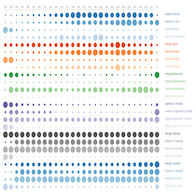

Psychological Attributes Network

Explore how personality traits are correlated with each other based on an empirical analysis be Srebrenka Letina. Nodes are personality traits and links are the correlations between them. Correlation indicates the linear association, negative (dashed) or positive (solid), that one personality trait has with another.
Financial Network Metrics
This D3.js chart is a temporal visualization of 24 attributes of a financial network. The network has banks as nodes and a link exists between two banks whenever they partecipated together in granting a loan. The temporal window is from 1984 until 2011. The size of each circle indicates the normalized value of each attribute where normalization is done with respect to the sum over all years. To see the values in numbers you can hover the mouse over the attribute in the legend.
Weapon Trade Network

Explore who buys and who sells weapons at the global level. estimates of trade flows between and within regions for one-year periods, 1955 to 2005 with five year interval. Initially the data is shown by region and if you click on a region you will see the trade flows country-by-country. Values are in US dollars.
Research Interests
Understanding Technological Innovation
Technological innovation is an essential problem with significant consequences for economic development and quality of life. I have a particular interest in understanding how and why technological innovations are initially developed, how and why particular technologies diffuse and gain popularity while others do not, and how to understand the evolutionary dynamics of technological innovations. One particular research topic I am working on concerns is analyzing those situations in which the development of technology is conducted by a community of searching agents rather than a single one. A particular research topic I am interested in is the modeling and construction of technological landscapes of solutions which are often called Fitness Landscapes. Additionally, I have an interest in the study of financial innovations, its distinguishing features and its development process. To have more details of what is technological innovation and what are the main areas of research consider having a look at my thesis, which you can find down in this page.
Financial Data Science
Traditionally, financial modeling and analysis have primarily relied on the use of quantitative tools for exploring and analyzing a wide range of datasets. The field of financial econometrics has been extensively used to forecast financial times series, model financial risks, and investigate financial market dynamics. Recently, the field of financial analysis has witnessed the emergence of novel and alternative data sets and new technologies made possible through recent advances in data mining and computer science. In this project, I would argue that a financial data science paradigm is needed in order to combine these novelties with the traditional financial econometrics. A financial data science paradigm is to be seen as a complementary approach to financial econometrics that can help to produce more accurate and robust models from empirical data. Financial data science is thus positioned at the interaction between financial econometrics, computer science, and data mining
Publications
-
Khraisha, T. (2019). Complex economic problems and fitness landscapes: Assessment and methodological perspectives. Structural Change and Economic Dynamics.
-
Khraisha, T., & Arthur, K. (2018). Can we have a general theory of financial innovation processes? A conceptual review. Financial Innovation, 4(1), 4.
-
Khraisha, T., & Mantegna, R. N. (2019). Network structure and optimal technological innovation. Journal of Complex Networks.